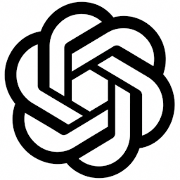
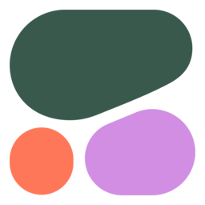
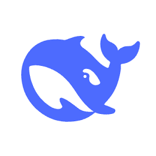

In Pro mode, WaxFrame sends prompts directly to each AI automatically — no copy/paste, no tab switching. Each AI needs its own API key. Follow the guides below to get set up.
Model recommendations and hive notes on this page were last reviewed May 24, 2026. Models shown are the shipped defaults — switch any AI to a newer model in-app via Recommend Models.
New to API keys? This is the part where most first-timers get stuck — so here’s the whole thing, start to finish, with nothing skipped. We’ll use Claude (Anthropic) as the example because the console is clean and easy to follow. Every other provider on this page works the same way: once you’ve done one, you’ve done them all.

The Set up your hive screen stays right where it is, so this is the moment to add your second AI. One AI isn’t a hive. WaxFrame works by having AIs review and sharpen each other’s work, so you need at least two to get anything out of it — and the good news is your second one can be free.
Make it Gemini (Google). It has a generous free tier with no credit card to start, so you get to a working two-AI hive at zero extra cost. Scroll to the Gemini card in The Default Six below and follow the same steps — its sign-in link is right there.
Then make Gemini your Builder — it saves you money. The Builder is the busiest role in the hive: every round it reads your project setup, all your reference material, the whole working document, and every reviewer’s notes. Run that on the free model and your two-AI hive costs almost nothing. After you click Recommend Models on Gemini, open its model dropdown and choose the option labeled 🔨 Builder, then set Gemini as your Builder.
Want sharper results? Add more. Every AI you bring in is another independent perspective catching what the others miss. Start with two, then grow your hive whenever you want — the rest of The Default Six are added exactly the same way.
Save your key before you click away — you usually only get one chance. Most provider consoles show the full key once. If you close that popup without copying it somewhere, you can’t get it back — you have to generate a brand-new key, which then invalidates the one you just pasted into WaxFrame, and now you’re chasing your tail.
So before you click past the copy popup, also paste the key into a plain text file or your password manager. The simplest habit: keep one note — Notepad, Notepad++, or a password-manager entry — with every WaxFrame key in it, labeled by provider, and update it whenever you rotate a key. It’s exactly what David, WaxFrame’s developer, does. This applies to every provider on this page, not just Claude.
In Pro mode, WaxFrame sends your prompts directly to each AI and fills in the responses automatically — no copy/paste, no tab switching. An API key is a private password that lets WaxFrame talk to each AI on your behalf.
Without API keys you can use WaxFrame Free(opens in a new tab) — the same hive workflow, but you copy and paste prompts manually between WaxFrame and each AI's web interface. API keys are only needed for the fully automated Pro experience.
Your API keys are stored in your browser's localStorage and sent to each AI provider only when WaxFrame makes a request on your behalf. WaxFrame has no backend — there is no database holding your keys, your prompts, or your documents.
One exception — Claude. Anthropic's API does not currently support direct browser requests (no CORS), so Claude traffic routes through a small Cloudflare Worker operated by WaxFrame's developer (see our Privacy Policy) at waxframe-claude-proxy.weirdave.workers.dev(opens in a new tab). The worker passes your request straight through to Anthropic and does not log or persist your API key or prompt content, but it does see them in-flight while forwarding. (The link goes to the live Worker endpoint, which expects API requests — opening it directly in a browser returns an API error rather than a page. That's normal.) All other providers (OpenAI, Gemini, Grok, Perplexity, Mistral, Cohere, Together AI, DeepSeek) connect directly browser-to-provider with no intermediary.
Where exactly they live: your API keys are saved in your browser's localStorage (the same mechanism that remembers your dark-mode preference, your hive setup, and your project state). This is per-browser-profile, per-machine — keys you save on your work laptop don't appear on your phone, and clearing browser data for this site removes them. They are not encrypted at rest; any code or extension running in this browser profile that can read localStorage can read them. That's the same threat model as any browser-stored credential. For shared or untrusted devices, use a separate browser profile or clear data when finished.
WaxFrame — open source, no backend, no tracking. Learn more →
A diverse, tested baseline — six different AI lineages. WaxFrame’s convergence numbers are measured on this hive. Start here.

gpt-5.5
OpenAI's flagship model
Your ChatGPT subscription does NOT include API access — the API is completely separate and pay-as-you-go. Go to platform.openai.com → Billing(opens in a new tab) and add credit ($5–$10 gets you plenty of testing).
claude-sonnet-4-6
Anthropic's capable everyday model
Requires credit balance. Go to platform.claude.com → Billing(opens in a new tab) and add credit (~$5 minimum). You are only charged for what you use.
gemini-3.5-flash
Google's fast multimodal model
Create a new key — don’t use the one already shown for your project. AI Studio may display an existing project key that looks ready to use, but it won’t authenticate in WaxFrame. Click Create API Key to generate a fresh one, name it WaxFrame, and use that.
Gemini has a generous free API tier — no credit card required to start. Important caveat: once you enable billing on your Google AI Studio account (add a credit card), the same Gemini model can start routing through paid-tier paths and charging per token, even when you think you're still on free. Costs can climb quickly with the Builder role specifically — it reads project setup, reference material, the full working document, and every reviewer's suggestions every round. For casual use, keep billing off. If billing is on, watch your Google AI Studio usage page(opens in a new tab) during longer runs.
grok-4.1-fast
Requires credit balance — add at console.x.ai → Billing(opens in a new tab). API availability may vary — check the console for current status.
mistral-large-latest
Mistral's flagship model
Mistral is fast and affordable, with a distinct European model lineage that adds genuine diversity to the hive.
sonar-pro
Requires credit balance — add at console.perplexity.ai → Billing → Add Credits(opens in a new tab).
Enabling auto-pay during signup unlocks a recurring subscription as low as $5/month; without it, the recurring rate is $50/month. The $5 tier covers most WaxFrame usage without thinking about per-call costs.
More providers we’ve pre-configured, added the same way. You’re not limited to these — see the note below.

command-r-plus
Cohere's flagship Command model
Supported and ready to use, but not yet hive-tested in production — treat the profile notes as provisional until we have run it.

deepseek-v4-flash
DeepSeek's flagship model
DeepSeek is 10–20x cheaper per token than OpenAI or Anthropic. Add credit at platform.deepseek.com → Top Up(opens in a new tab) — $5 goes a long way. One caveat: it is consistently the slowest responder in the hive (often 60–90s), which is why it is an opt-in rather than one of the default six. If you don't mind the wait, it is the most affordable capable AI you can add.
meta-llama/Llama-3.3-70B-Instruct-Turbo
Open-weight model via Together's gateway
A low-cost gateway to open-weight models like Llama. Supported and ready, but not yet hive-tested in production — profile notes are provisional until we have run it.
WaxFrame works with far more than the providers listed here. Use Add Custom AI to connect any OpenAI-, Anthropic-, or Google-compatible model, or switch to Server Based AI to bring in a whole gateway of models at once. These are simply the ones with ready-made setup guides.
WaxFrame already speaks Copilot, but Microsoft doesn’t currently offer a direct consumer API-key path. When they do, it lights up here with no further setup.
Every AI in your hive has its own personality, strengths, and quirks. Knowing how each one behaves helps you pick the right Builder, get the most out of your reviewers, and decide when to toggle them off. This guide is based on real-world observations using WaxFrame in production — and on the hive itself, since each AI's profile below was refined by passing it through the hive for self-description and peer review.
A solid all-rounder as Builder or Reviewer — fast, reliable, consistent. A strong Builder option alongside Gemini, and a dependable everyday reviewer. As a reviewer, it reliably signals convergence in later rounds.
When ChatGPT returns NO CHANGES in later rounds, treat this as a sign of document convergence rather than a reason to toggle it off.
As a reviewer, catches subtle tone, redundancy, and flow issues others miss. As a Builder, reliable and format-compliant.
Claude tends to give the most thoughtful reasoning for its suggestions — clarifying the logic behind each change.
A very low-cost, highly reliable reviewer that rarely deviates from instructions. Its main limitation is speed — it dictates the hive's pace, since a round finalizes only after all reviewers respond. Best as an opt-in when budget matters more than speed.
Use DeepSeek for large refinement rounds where keeping token cost minimal matters more than fast iteration.
A strong default Builder option — capable, free-tier friendly, and strong at grammar, word choice, and structure. Also functions as a reliable reviewer. On paid accounts, consider using it as a reviewer to control Builder token costs.
Gemini + DeepSeek is the lowest-cost hive — Gemini free as Builder, DeepSeek a near-free reviewer — just expect slower rounds.
A valuable reviewer in early rounds, pushing hard for stronger phrasing. Its tendency to revisit resolved points can prolong final convergence.
Toggle Grok off in later refinement rounds once key decisions are finalized to avoid repetitive suggestions.
A specialized reviewer for factual or research-heavy documents. Its search-aware training makes it effective at spotting unsupported claims.
Perplexity is particularly useful early in a project when the document is rough and needs fact-checking input from the hive.
A fast, capable all-rounder. Quick enough to keep rounds snappy as a reviewer, and a reliable Builder. Its European lineage offers a different perspective from US-based models.
Mistral's speed makes it a great Builder when you want fast iteration without slowdowns.
Not yet hive-tested. Cohere is fully supported, but we have not yet run it through the hive in production — the notes below are based on its general reputation and will be refined with real data.
A specialized reviewer whose Command models are designed for business and document workflows. Brings a strong structured approach to content refinement.
Not yet hive-tested. Together AI is fully supported, but we have not yet run it through the hive in production — the notes below are provisional and will be refined with real data.
A low-cost gateway to open-weight models. Brings a distinct open-source perspective to the hive and runs quickly. A good opt-in reviewer for diversity.
Not yet available. WaxFrame already supports Copilot in its configuration, but Microsoft does not currently offer a direct consumer API-key path. There is nothing to set up today.
Listed for completeness. The moment Microsoft opens a public API-key path, Copilot becomes usable here with no further work — its configuration already ships in WaxFrame. Profile notes will be added once it can actually be run.
You don't need all your AIs every round. Toggle them on or off at any time, except for your Builder. For a lean setup, Gemini makes an excellent free Builder, with Claude for nuanced feedback and Grok for early assertive input. On the tightest budget, Gemini as Builder plus DeepSeek as a reviewer is the cheapest hive that runs — just expect slower rounds. A smaller hive completes rounds faster; the full hive gives the most thorough review.
Toggle, don't remove. Use the checkboxes on the work screen to toggle individual AIs on or off between rounds while preserving their API keys. This is the most efficient way to manage persistent reviewers.
Your Builder is the most important choice. The Builder processes the entire document along with all reviewer suggestions each round, using significantly more tokens than any reviewer. Choose an AI you trust with large amounts of text, one with sufficient rate limits and token budget for your project scope. For a deeper look at how tokens are counted, see What Are Tokens?. For a per-token cost comparison across every provider on this page, see AI API Pricing.
Watch for convergence signals. When multiple AIs start returning NO CHANGES in the same round, the hive signals that the document has converged and may be ready for finalization or manual review.

WaxFrame is fully open source under the AGPL-3.0 license. Every line of code is public and auditable.
Your API keys go directly from your browser to each AI provider, with one exception: Claude traffic routes through a small Cloudflare Worker (no CORS support from Anthropic) that does not log keys or prompts. See the API Setup page for the full disclosure. Read our Privacy Policy and Terms of Use, or read the source on GitHub(opens in a new tab)
About
Built with ❤️ by WeirDave and Claude.
Enter your license key to continue.
Don't have a key? Buy WaxFrame Pro(opens in a new tab)Your WaxFrame Pro license is active.